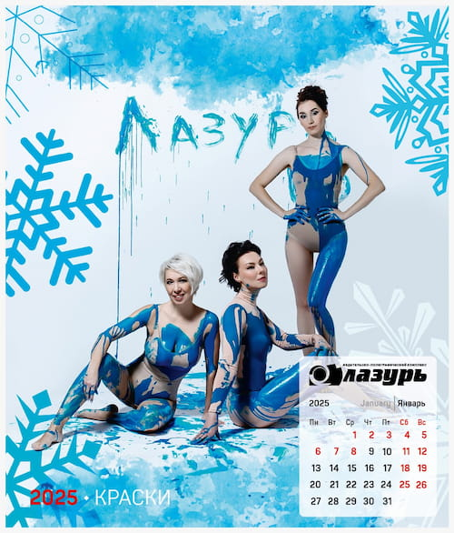
С радостью сообщаем, что наш корпоративный календарь ИПК Лазурь завершен! После нескольких увлекательных фотосессий, наполненных креативом и эмоциями, мы готовы поделиться результатами нашей совместной работы.
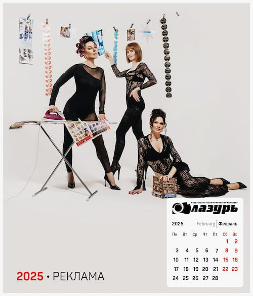
В фотосессиях приняли участие сотрудники типографии Лазурь, которые проявили свои творческие способности, примеряя разнообразные образы. Каждый месяц календаря отражает уникальную концепцию, связанной с нашими направлениями работы: газеты, упаковка, книги, каталоги, карты, реклама, раскраски, журналы, игры и открытки. Таким образом, каждый кадр стал не только отражением нашей дружной команды, но и нашей профессиональной деятельности.
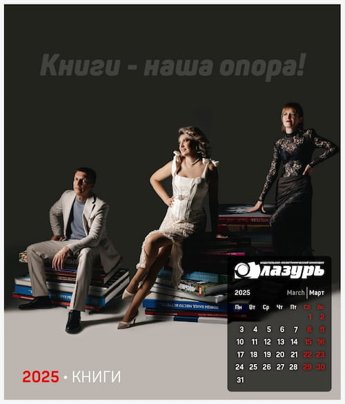
Особая благодарность нашему талантливому фотографу, который создал атмосферу веселья и доверия, благодаря чему были запечатлены самые искренние моменты. Этот календарь станет не только красивым украшением нашего офиса, но и источником вдохновения для каждого из нас.
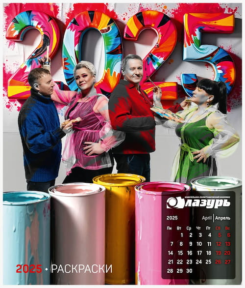
Мы с нетерпением ждём возможности поделиться этим проектом с теми, кто был с нами в этом увлекательном путешествии. Спасибо всем участникам и организаторам за вашу активность и поддержку! Давайте вместе встречать новый год с позитивом и креативом!
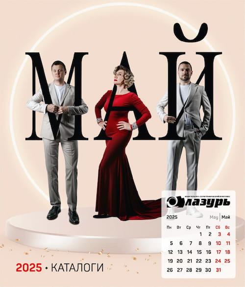
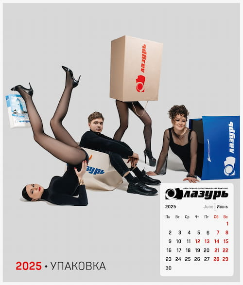
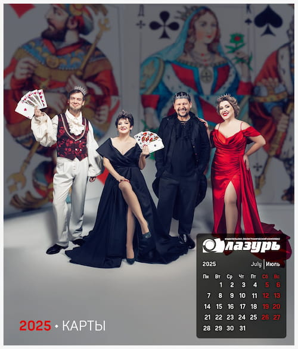
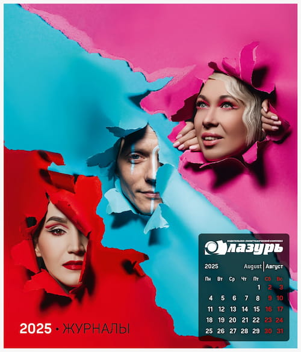
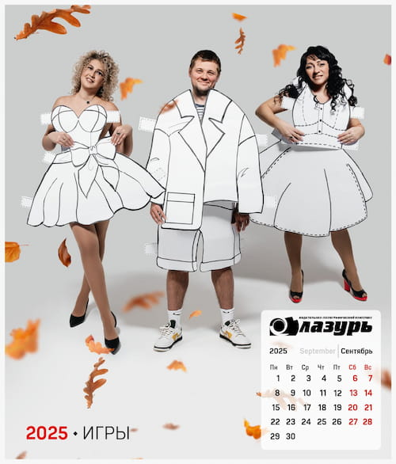
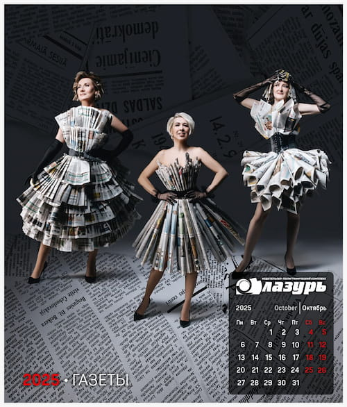
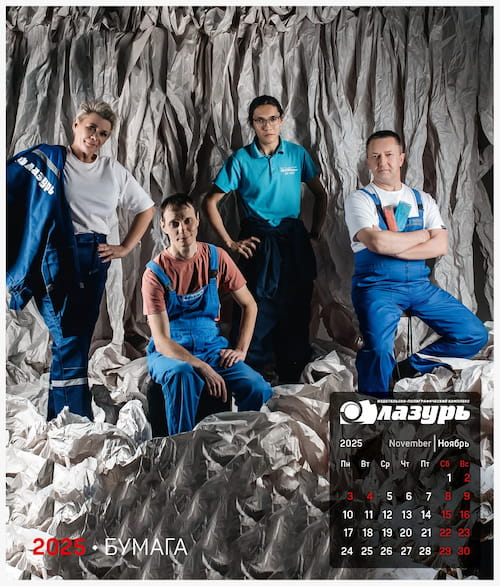
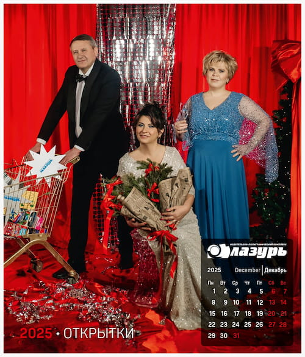